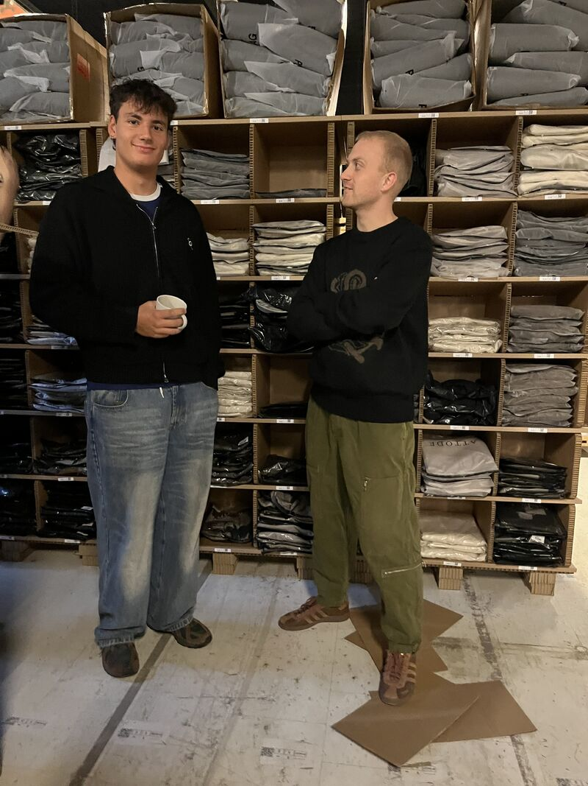

Dagen efter en stor kampagne er den hårdeste prøve for et lager. Her er hvad der sker, når systemet og indretningen er optimeret, og presset for alvor er på.
MuraMura er et moderne lagerhotel i Aarhus N med speciale i brands hvor detaljen tæller: mode, smykker og sportswear. De tilbyder en komplet e-commerce outsourcing løsning, fulfillment, pluk & pak, returhåndtering, kundeservice og content studio under ét tag.
MuraMura kører SmartPack som operations-platform og har kombineret det med en gennemoptimeret lagerindretning baseret på realtidsdata fra systemet.
Kampagnedage, Black Friday, udsalg, nyhedsbrevs-drops, er deri, mange lageroperationer knækker. Ordrer strømmer ind i buljong. Medarbejderne skal eksekvere hurtigt. Et uoptimeret lager bruger det meste af dagen på at gå mellem reoler.
For MuraMuras kunder inden for mode og smykker gælder det særligt: en kampagnedag genererer potentielt et helt måneds normalt volumen på få timer. Spørgsmålet er ikke om systemet kan klare det, men om det kan gøre det uden at fejlraten stiger og gangafstanden eksploderer.



Det mest afslørende tal er gangafstanden: 17.577 pluk på 10,24 kilometer svarer til 0,58 meter per pluk. I et traditionelt uoptimeret lager kan dette tal ligge på adskillige meter, og det gælder typisk kun mere på en travl dag, fordi gangmønstre bliver kaotiske.
Hos MuraMura gælder det modsatte: ABC-indretningen og de intelligente plukkeprofiler i SmartPack sikrer, at medarbejderne aldrig behøver gå længere end nødvendigt, også når volumenet er højt.
SmartPack måler "Effective Hours" baseret på branchegennemsnittet for den udførte opgavemængde. For kampagnedagens volumen estimerede systemet 322,5 timer. MuraMuras team klarede det på 117,1 faktiske arbejdstimer.
Det svarer til en Performance Percentage på 275,5%, teamet er næsten tre gange så effektivt som branchestandarden. Det betyder også, at MuraMura kan håndtere tre gange så stor volumen med samme bemanding som et gennemsnitligt setup.
“Vi er ikke et traditionelt lagerhotel. Vi er en e-commerce outsourcing partner, der forstår at logistik er en integreret del af kundeoplevelsen. Systemet skal virke når det gælder, ikke kun når det er roligt.”– MuraMura, Aarhus N
Hvis dit brand er inden for mode, smykker eller sportswear og du vil have et lagerhotel der kan dokumentere sin performance i realtid, og som holder niveauet selv på kampagnedage, er MuraMura værd at ringe til.
Som SmartPack-kunde hos MuraMura får du direkte portaladgang til dit lager, realtids lagerstatus og automatisk fulfillment-feedback til din webshop.
Kontakt SmartPack og hør om rammeaftalen med MuraMura og andre SmartPack-lagerhoteller.